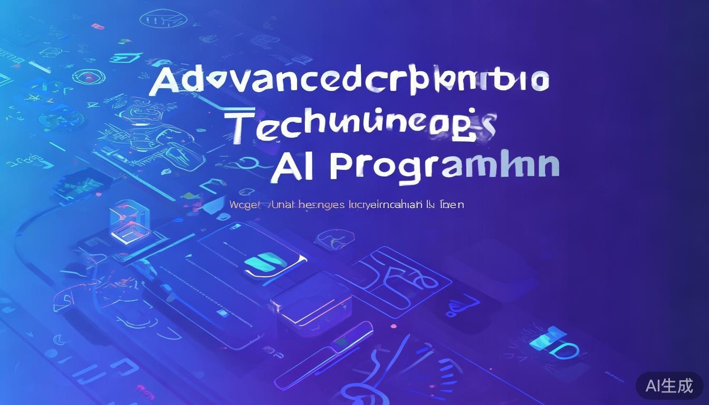

白驹 · 全局大脑 · AI 创作纪元
AI编程进阶实战
从「用AI补全代码」到「用AI构建系统」，这份指南带你进入AI编程的进阶世界。
一、AI编程工具全景
代码补全
| 工具 | 特点 | 适合场景 |
|---|---|---|
| GitHub Copilot | 最流行，生态最好 | 日常开发 |
| Codeium | 免费Copilot | 预算有限 |
| Cursor | AI原生IDE | 新项目开发 |
| CodeBuddy | 国产，中文优化 | 国内开发者 |
对话式开发
- ChatGPT/Claude/DeepSeek：架构设计、算法讲解、代码审查
- v0.dev：文字生成React组件
- Replit Agent：在线协作开发
自主Agent
- Devin：端到端自主开发
- SWE-agent：自动修复GitHub issue
- OpenHands：开源AI软件工程师
二、进阶提示词技巧

1. 系统架构设计
你是一位资深系统架构师。请设计一个[系统类型]的架构：
1. 技术栈选型（前端/后端/数据库/缓存/消息队列）
2. 系统架构图（文字描述各组件关系）
3. 核心模块划分和职责
4. 数据流设计
5. 关键设计决策和权衡
6. 扩展性和容错设计
2. 代码审查
请审查以下代码，从以下维度分析：
1. 功能正确性：是否有bug？
2. 性能：是否有优化空间？
3. 可读性：命名、注释、结构是否清晰？
4. 安全性：是否有安全漏洞？
5. 可维护性：是否易于修改和扩展？
6. 最佳实践：是否符合[语言/框架]的规范？
3. 重构建议
请重构以下代码，要求：
1. 应用[设计模式/原则]，如SOLID、DRY
2. 提取公共逻辑，消除重复
3. 优化性能（时间/空间复杂度）
4. 添加必要的错误处理和日志
5. 保持功能不变，只改进结构
三、AI辅助开发工作流
需求分析 设计 编码 测试 部署
AI在每个环节的作用：
- 需求分析：AI生成用户故事、验收标准
- 系统设计：AI生成架构方案、数据库设计
- 编码：AI生成代码、补全、重构
- 测试：AI生成测试用例、测试数据
- 部署：AI生成Dockerfile、CI/CD配置
- 文档：AI生成README、API文档
四、实战项目
项目1：AI代码审查工具
功能：自动审查GitHub PR，给出改进建议
技术栈：GitHub API + DeepSeek API + Python
核心代码思路：
# 1. 获取PR diff
diff = github.get_pr_diff(repo, pr_number)
# 2. 调用AI审查
review = ai.review_code(diff, rules=["security", "performance", "style"])
# 3. 自动评论到PR
github.comment(pr_number, review)
项目2：智能文档生成器
功能：根据代码自动生成API文档
技术栈：AST解析 + AI生成 + Markdown输出
项目3：代码搜索助手
功能：自然语言搜索代码库
技术栈：Embedding + 向量数据库 + RAG
五、效率提升数据
根据GitHub和Stack Overflow的调研：
- 使用AI辅助的开发者，编码速度提升 55%
- 代码质量（bug率）降低 30%
- 学习新技术的时间缩短 40%
- 重复性工作减少 60%
六、未来趋势
- AI原生IDE：从「插件」到「核心」，AI成为IDE的中心
- 自然语言编程：用中文/英文描述需求，AI生成完整系统
- 自主维护：AI自动修复bug、更新依赖、优化性能
- 人机协作新范式：人做架构和决策，AI做实现和优化
七、实战练习
- 用AI完成一个完整的功能模块（从设计到测试）
- 用AI重构一段「屎山」代码
- 用AI为一个开源项目提交PR
- 搭建一个AI辅助开发的工作流
核心理念：AI不会取代程序员，但「会用AI的程序员」会取代「不会用AI的程序员」。你的价值在于：问题定义、架构设计、AI协作、最终把关。
出处声明：本页内容为白驹全局大脑原创，或已标注引用来源；改编内容遵循原始项目许可证（如 MIT / CC），不侵犯原作者权益。若引用内容涉及版权问题，请联系我们更正。